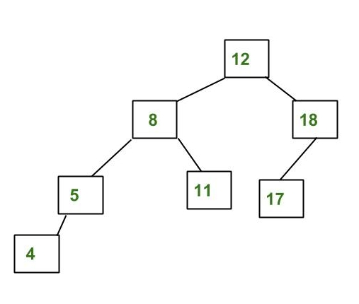
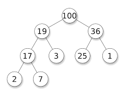

CIS 263 |
Tree Exercises |
Fall 2019 |
- Draw the binary search tree resulting from the following insertions: 25, 15, 10, 27, 12, 20, 17, 7, 22, 29, 24, 21
- For each problem below, begin with this tree (i.e., each answer should be the following tree with only one
node missing):
- Delete 5
- Delete 12
- Delete 6
- Delete 4
- Consider the following binary tree (Note that it is not a search tree because the nodes are in no
particular order.)
- Write the tree in prefix order
- Write the tree in postfix order
- Write the tree in infix order
- Write a method
hasDuplicatethat will determine in linear time whether any value appears more than once in a binary search tree. (AssumeNodes with a value, a left pointer, and a right pointer.) - Consider the following AVL tree:
- Draw the result of adding 2 to this tree.
- Draw the result of removing 17 from this tree. (The original tree.)
 - When using an AVL tree, when are double rotations necessary?
- Consider the following binary max heap:
- Draw the result of adding 93 to the heap.
- Draw the result of removing the max from his heap (the original).

(Note: Exercises above drawn largely from the Weis text.)
Updated Thursday, 24 October 2019, 3:56 PM